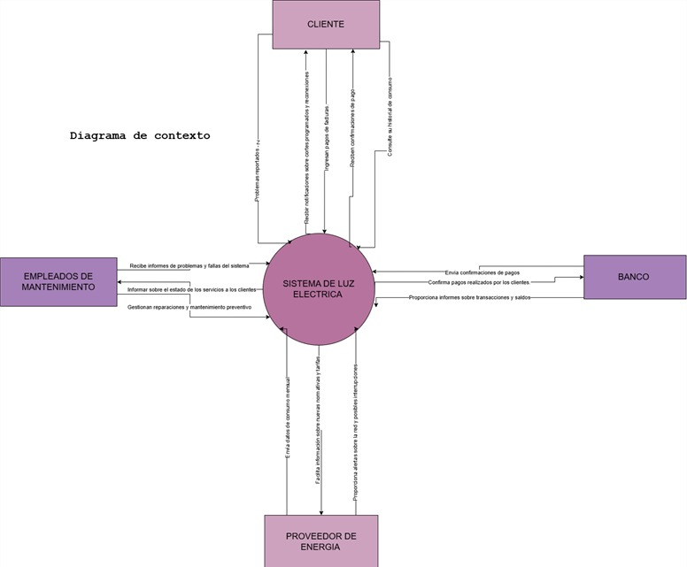

Modelo del Sistema de Gestión Eléctrica Automatizada
Declaración de Propósitos
Se solicita modelar un sistema que gestione la Gestión Eléctrica Automatizada para la Empresa Nacional de Electricidad (ENDE) que permita a los usuarios y al personal realizar:
- Medición de Consumo
- Facturación Automatizada
- Gestión de Mantenimiento
- Atención al Cliente
Diagrama de Contexto
A continuación, se incluye el diagrama de contexto que representa las interacciones del sistema:
Lista de Acontecimientos
Los siguientes son los eventos que ocurren dentro del sistema:
- Cliente solicita información sobre su consumo eléctrico.
- Cliente realiza el pago de su factura eléctrica.
- Cliente reporta una falla en el servicio eléctrico.
- Empleado de mantenimiento recibe informes de fallas en el sistema.
- Empleado de mantenimiento programa una reparación.
- Proveedor de energía envía datos de generación y distribución eléctrica.
- Banco confirma pagos realizados por los clientes.
- Sistema genera informe de facturación.
- Sistema actualiza el estado de los servicios eléctricos.
- Cliente solicita histórico de consumos y pagos.